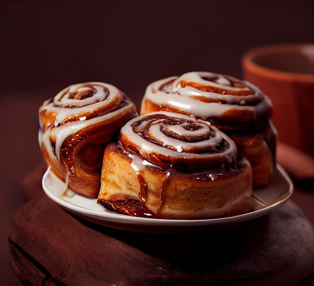

Cinnamon Rolls

Description
This is a cinnamon roll. It is really good. Better than Cinnabon by 60% at least.
This recipe will take 3 days from start to finish, with most of the time from kneading the dough
Ingredients:
- flour
- yeast
- butter (lots)
- egg
- sugar (lots)
- cinnamon
- cream cheese
- milk
- oven
Steps:
- heat up milk, mix with yeast
- add butter, egg, and flour into a pile
- knead the pile for 3 hours (no breaks)
- roll the dough out into square
- slather butter on the dough square
- sprinkle sugar and cinnamon on the buttery dough square
- roll it up, cut into pieces
- bake until a golden brown
- make cream cheese frosting
- slather it onto hot fresh rolls until it looks amazing